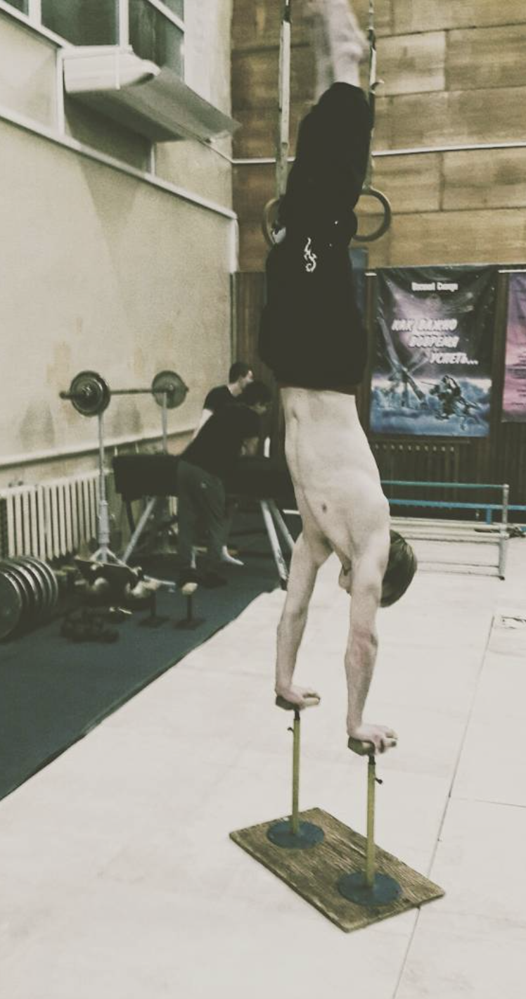
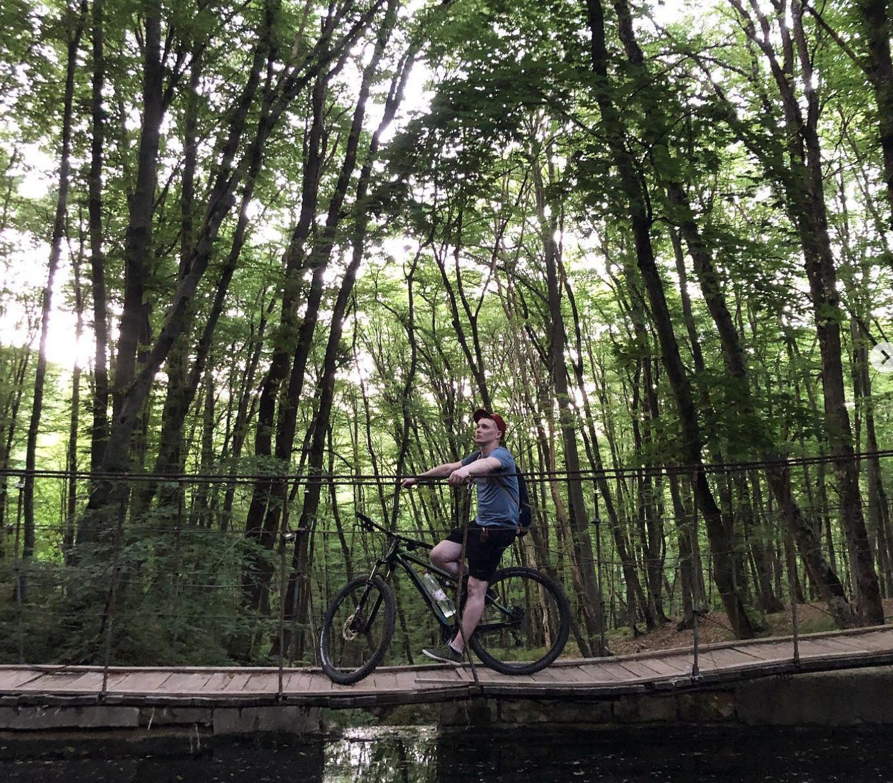 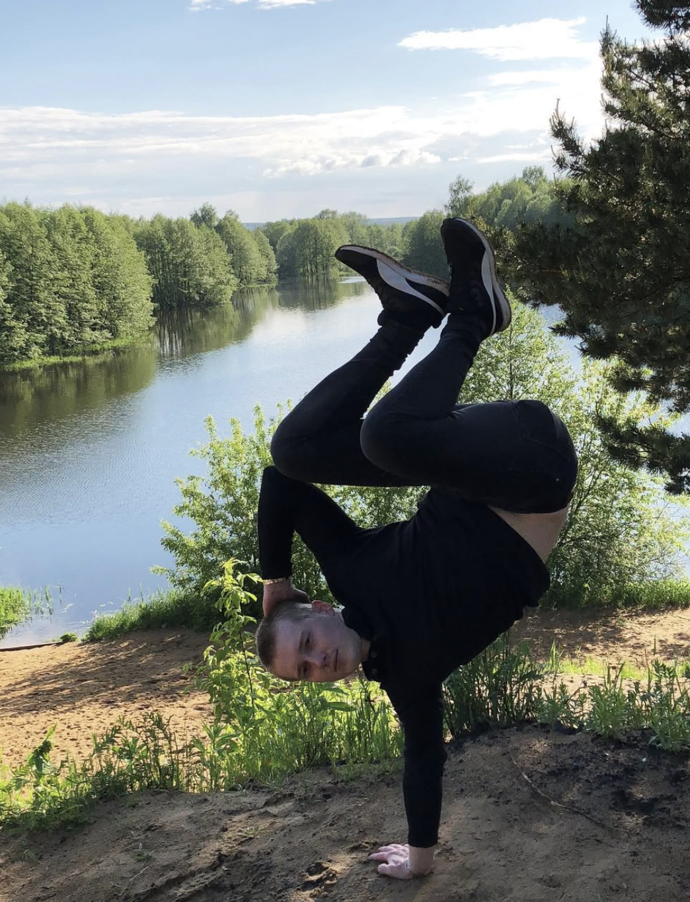 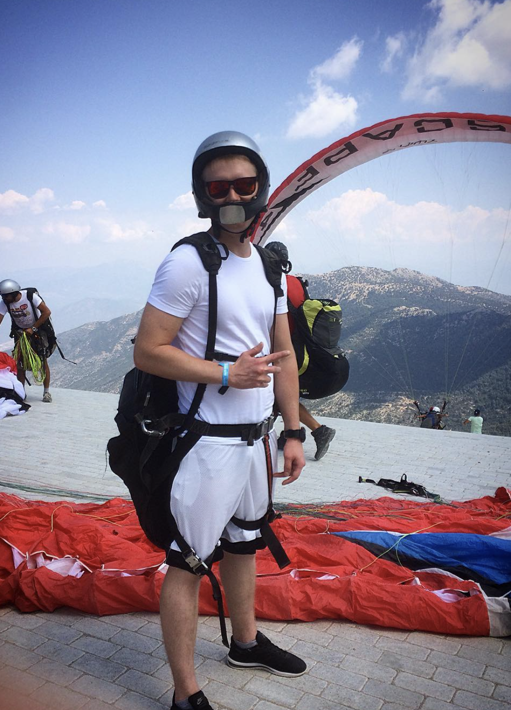
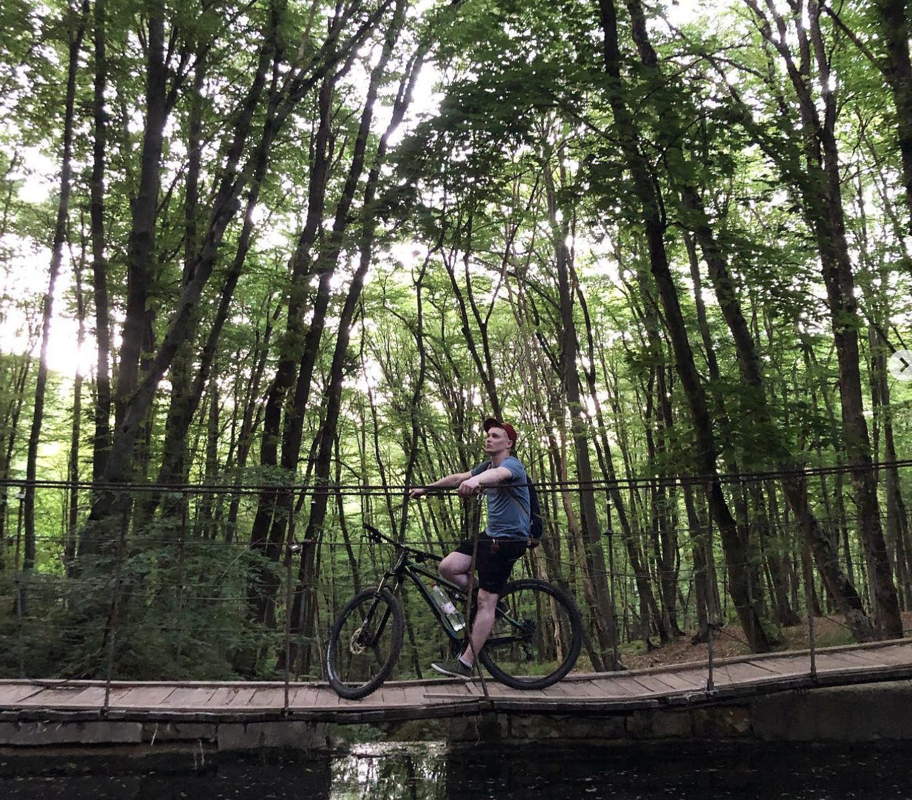 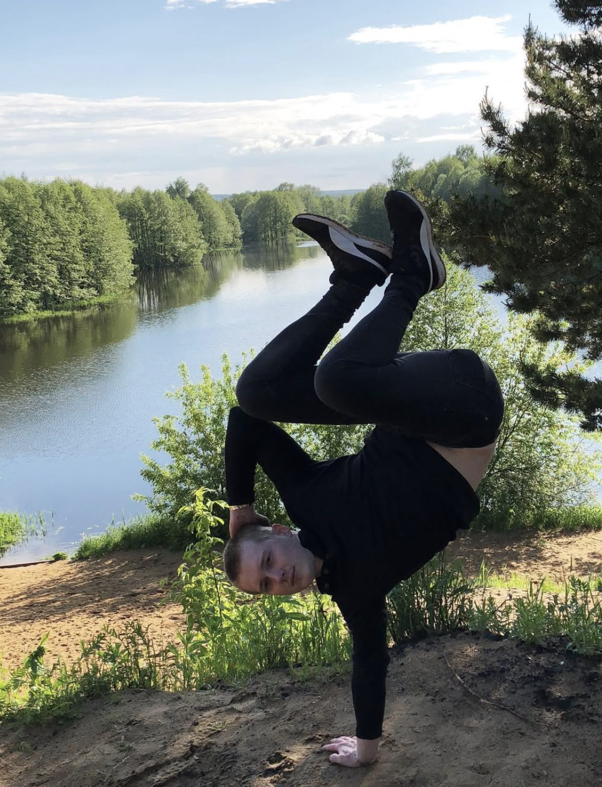 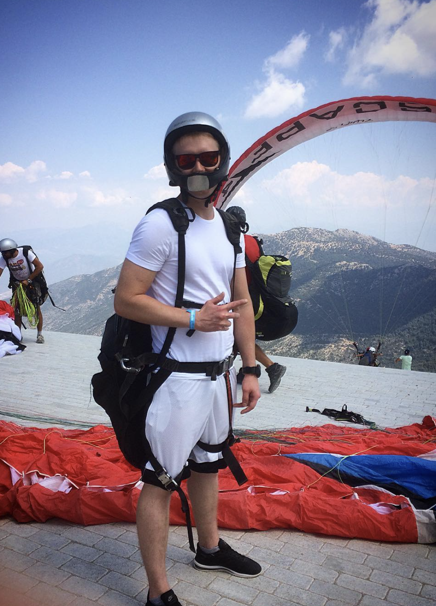
Сейчас своей целью я поставил изучению направления web-developmrnt, т.к. нахожу это направление очень привлекательным для дальнейшего развития, что не мало важно, возможность работать удаленною
| Колчин Александр beginner web engineer |
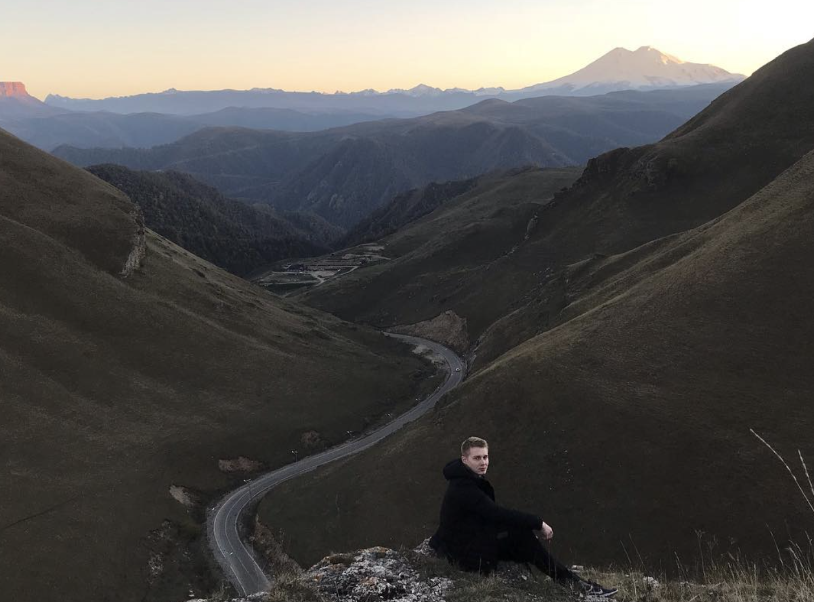 |
|---|
| Обо мне |
Привет всем читающим, меня зовут Александр, хочу рассказать немного о себе.
Я выпускник РГУ нефти и газа имени И.М. Губкина, восемь лет работал в сфере
газификации в разных компаниях и по разным направлениям.
|
|
| Увлечения |
В списке моих увлечений находися все, что связанно с активнм образом жизни, около 10 лет
своей жизни уделил направлениям breake-dance и акробатике, так же не могу представить свою жизнь без великов.
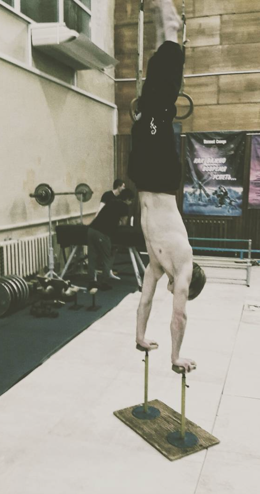
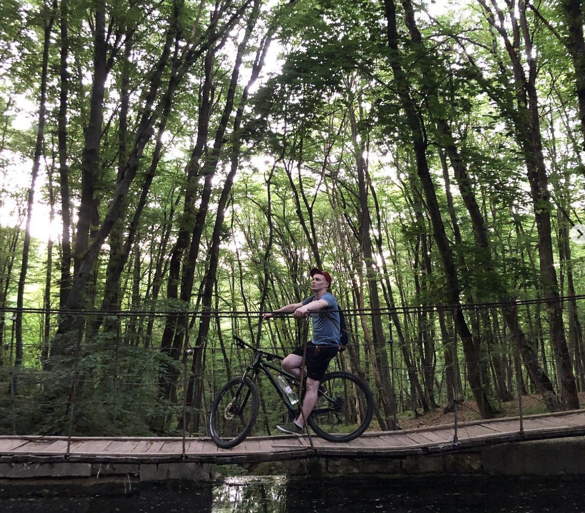 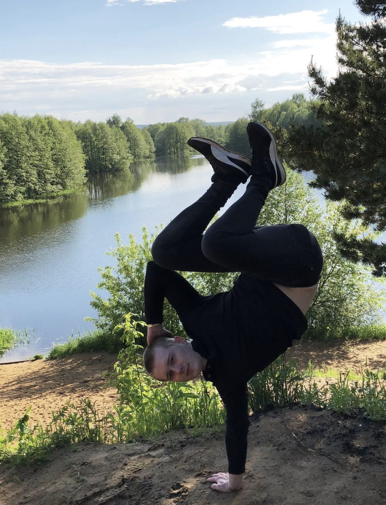 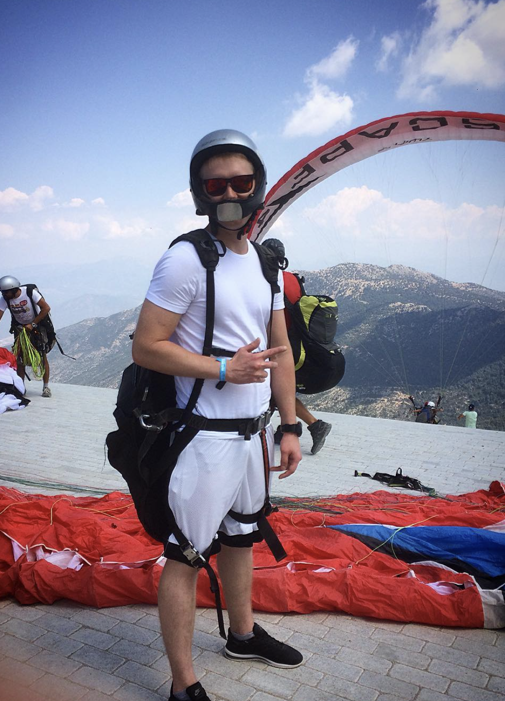 |
|
| Цель |
Сейчас своей целью я поставил изучению направления web-developmrnt, т.к. нахожу это направление очень привлекательным для дальнейшего развития, что не мало важно, возможность работать удаленною |